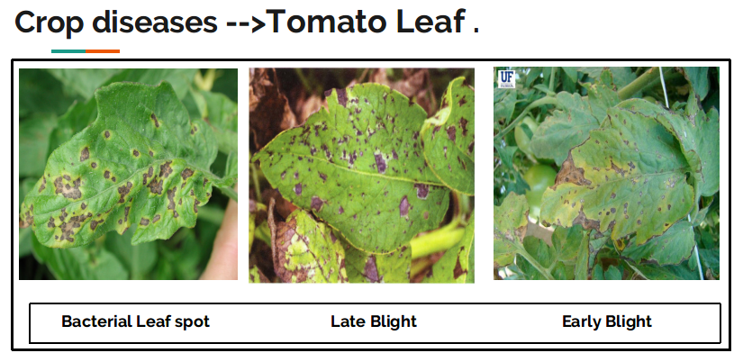

TECH & AGRICULTURE
The agricultural land mass is more than just
being a feeding
sourcing in today’s world. World economy is highly dependent of agricultural productivity.
Therefore in field of agriculture, detection of disease in plants plays an important
role. To detect a plant disease in very initial stage, use of automatic disease detection
technique is beneficial.
The existing method for plant disease
detection is simply naked eye observation through which identification and detection of
plant diseases is very difficult and challenging.
PDMS A SOLUTION !
For doing detection of disease by naked eye is not possible so for that a large team of experts as well as continuous monitoring of plant is required, which costs very high. In such conditions, the suggested technique by PDMS proves to be beneficial in monitoring large fields of crops. Automatic detection of the diseases by a system through just uploading an image of the plant leaf provides easier, precise, non-dependent and cheaper solution for plant disease detection.
Explore more about PDMSWhy PDMS ???
#} {##} {#TECH & AGRICULTURE
#} {#" The agricultural land mass is more than just being a feeding sourcing in today’s world.
World economy is highly dependent of agricultural productivity.
Therefore in field of agriculture, detection of disease in plants plays an important role.
To detect a plant disease in very initial stage, use of automatic disease detection technique is beneficial. "#}
{#
#}
{##}
{# #}
{# #}
{# #}
{##}
{# WHY PDMS ??
Similarity of diseases
Since the past days and in the present too, farmers usually detect the crop diseases with their naked eye which makes them take tough decisions on which fertilisers to use for the respected crop disease that requires detailed knowledge of the types of diseases and lot of experience. Some of the diseases look almost similar to farmers often leaves them confused. Look at the Below image for more understanding.
Result of using wrong Fertilizer
All the disease of tomato crop almost
looks similar.
In case the farmer makes wrong predictions and uses the wrong fertilizers or more than the
normal dose (or) threshold or Limit (every plant has some threshold fertilizers spraying to
be followed), it will mess up the whole plant (or) soil and cause enough damage to plant and
fields.
The result can be seen in the following image.
To prevent this situation, we need better and
perfect guidance on which fertilizers to use, to make the correct identification of diseases,
and the ability to distinguish between two or more similar types of diseases in visuals.
Thus
PDMS (Plant Disease Monitoring System)
proves beneficial for this kind of situtation.
How to Use PDMS ?
How to use PDMS ?
Steps to use PDMS (Plant Disease Monitoring System).
 #}
#}
1) Click "USE PDMS" & Open the Use PDMS tab
This can be available from the top menu or
sidebar(if you are using mobile).
By Opening new tab there will be sections like how to upload the image,
for which crops PDMS is available
You can also refer button below.
#}
2) Go to "Upload Image Section" for further
After opening Use PDMS tab, go to Upload Image Section.
After that refer how to upload image and upload image of crop accordingly.
You can refer below how to upload image.
#}
3) CONGRATULATIONS !!! YOUR DISEASE IS DETECTED
After Uploding the image the PDMS system will automatically detect the disease
and will give following output :
- The detected disease.
- Cause (Pathogen).
- Symptoms of Disease.
- Management of Disease. {#
- Unlimited Features #}